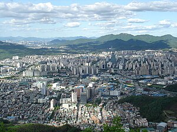

안양에 대하여
안양시는 대한민국 경기도에 위치한 도시로, 서울의 남서쪽에 위치해 있습니다. 안양은 아름다운 자연 경관과 풍부한 문화 유산으로 유명합니다. 이 도시는 편리한 교통망과 다양한 편의 시설을 갖추고 있어, 많은 사람들이 살고 싶어하는 곳 중 하나입니다.
주요 관광지
- 안양예술공원: 현대 예술 작품과 자연이 어우러진 공간으로, 많은 사람들이 찾는 명소입니다.
- 안양천: 안양을 가로지르는 하천으로, 산책로와 자전거 도로가 잘 조성되어 있습니다.
- 안양 중앙공원: 도심 속의 큰 공원으로, 가족 단위로 즐길 수 있는 다양한 시설이 있습니다.
나를 소개합니다
안양에 있는 인덕원 고등학교에 다니는 31011방현서이며 희망 진로는 웹툰작가입니다. 여러 그림들을 그리고 배우고있으며 관련 학과 대학교 진학을 희망하고있습니다. 아래는 제가 그린 그림입니다.

위와 같이 저는 여러 그림들을 그리고 있으며 미래에 유명한 웹툰작가가 될 수 있었으면 좋겠습니다.